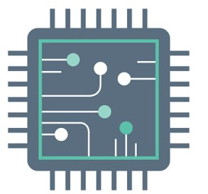
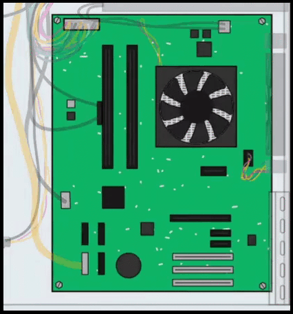
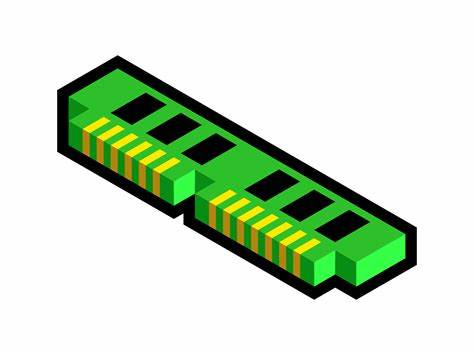
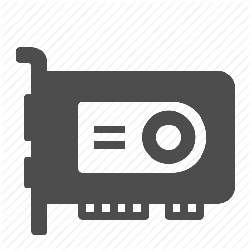

What is a Desktop?
Many people use desktop computers at work, home, and school. Desktop computers are designed to be placed on a desk, and they're typically made up of a few different parts, including the computer case, monitor, keyboard, and mouse there are also other aspects used to protect the digital part of it called firewalls and anti-malware software
Index:
Everyone thinks that computers just come as they are and are built like well yes but there"s more to it computers have multiple parts that it needs to function some of them being:
- CPU
- The Motherboard
- RAM(Random Access Memory)
- The Power Supply
- Graphics Card
- Computer Storage
- System Management
- House Keeping of a Computer
- Archives and Security
The CPU
This stands for "Central process Unit." The computer hardware is that the primary element of a pc that processes directions. It runs the software and applications, perpetually receiving input from the user or active package programs. It processes the info and produces output, which can keep by associate application or displayed on the screen.
The computer hardware contains a minimum of one processor, that is that the actual chip within the computer hardware that performs calculations. for several years, most CPUs solely had one processor, however currently it's common for one computer hardware to own a minimum of 2 processors or "processing cores." A cpu|central process unit|CPU a dual-core computer hardware and models with four cores area unit called quad-core CPUs. High-end CPUs might have six (hexa-core) or perhaps eight (octo-core) processors. A pc might also have over one computer hardware, that every have multiple cores. for instance, a server with 2 hexa-core CPUs incorporates a total of twelve processors.
While processor architectures disagree between models, every processor at intervals a computer hardware generally has its own ALU, FPU, register, and L1 cache. In some cases, individual process cores might have their own L2 cache, tho' they will additionally share a similar L2 cache. one frontside bus routes knowledge between the computer hardware and also the system memory.
NOTE: The terms "CPU" and "processor" area unit typically used interchangeably. Some technical diagrams even label individual processors as CPUs. whereas this verbiage isn't incorrect, it's a lot of correct (and less confusing) to explain every process unit as a computer hardware, whereas every processor at intervals a {cpu|central process unit|CPU|C.P.U.|central processor|processor|mainframe|electronic equipment|hardware|computer hardware} could be a processing core.
The Motherboard 
The motherboard may be a computer circuit board and foundation of a laptop that's the most important board during a laptop chassis. It allocates power and permits communication to and between the mainframe, RAM, and every one different constituent elements.
A motherboard provides property between the hardware parts of a laptop, just like the processor (CPU), memory (RAM), hard drive, and video card. There ar multiple forms of motherboards, designed to suit differing kinds and sizes of computers.
Each form of motherboard is meant to figure with specific forms of processors and memory, in order that they do not work with each processor and kind of memory. However, exhausting drives are largely universal and work with the bulk of motherboards, notwithstanding the kind or complete.
RAM(Random Access Memory)
Random Access Memory (RAM) could be a high-speed part in devices that quickly stores all info a tool desires for this and future. It’s a kind of storage device which will be haphazardly accessed, which means any computer memory unit of memory may be accessed while not touching the preceding bytes. RAM is found in servers, PCs, tablets, smartphones, and alternative devices. In today’s technology, RAM takes the shape of computer circuit chips with metal-oxide-semiconductor (MOS) memory cells.
The speed and performance of a system is directly related to with the quantity of RAM put in.
RAM stores the data a laptop is actively victimization in order that it may be accessed quickly. It permits computers to perform everyday tasks like loading applications, browsing the web, piece of writing a computer programme, and shift quickly among of these tasks.
Types of RAM
There are two main types of RAM that contrast in both performance and price range:
- Static Random Access Memory (SRAM): a memory chip that is faster and uses less power than DRAM
- Dynamic Random Access Memory (DRAM): a memory chip that can hold more data than an SRAM chip but requires more power.
- Volatile Storage (Memory): needs a continual offer of electricity to store/retain knowledge. It acts as a computer's primary storage for quickly storing knowledge and handling application workloads. samples of computer storage embody cache memory and random access memory (RAM).
- Non-Volatile Storage: a kind of storage mechanism that retains digital knowledge even though it’s powered off or isn’t furnished with electric power. usually|this can be often named as a storage device mechanism, and is employed for permanent knowledge storage requiring I/O operations. samples of store embody a tough disk, USB storage and optical media.
- Hard disks.
- Flash drives.
- Floppy diskettes.
- Tape drives.
- CD-ROM disks.
- Blu-ray disks.
- Memory cards.
- Cloud drives.
The table below indicates the diffrence between DRAM and SRAM
|
Feature |
DRAM |
SRAM |
|
Cost |
Cheaper |
More expensive |
|
Performance |
Slower: Off-chip memory with longer access time |
On-chip memory with minimal access time; can run at the speed of the host microprocessor |
|
Use case |
Main memory |
Level 1 and Level 2 microprocessor caches |
|
Density |
Less density per cell (1 transistor per chip) but can pack more cells into space |
Denser (6 transistors per chip) but can fit fewer cells into space |
|
Power |
Generally higher: Capacitors leak power thanks to imperfect insulation, requiring regular power refreshes. |
Generally lower: No charge leakage since it changes direction of current through switches instead of leaking power through the capacitor. However, this depends on the application environment and SRAM can consume as much or more power as DRAM. |
|
Storage capacity |
Larger: Connects directly to CPU bus, volatile storage measured in GBs |
Smaller: Acts as cache; storage measured in MBs |
|
Volatility |
Volatile: Must have active power supply plus frequent charges while active. |
Volatile: Does not require additional charges while it is receiving power, but eventually loses data without it. |
|
Physical placement |
Motherboard |
Processors or between processor and main memory |
The Power Supply

A power supply is that the hardware part that has electricity to power computers and different devices. It converts electrical current force from an influence supply, like associate degree outlet, battery or generator, to the proper format and passes it on to a tool. It conjointly regulates the voltage skillful to the machine to forestall warming. Power Supplies are generally abbreviated as annotation or P/S, PSU (power supply unit).
Power supplies are rated in terms of the amount of watts they generate. The a lot of powerful the pc, the a lot of watts it will offer to elements.
The Grahics Card
A graphics card could be a variety of display adaptor or video card put in among most computing devices to show graphical knowledge with high clarity, color, definition and overall look. A graphics card provides high-quality visual show by process and death penalty graphical knowledge mistreatment advanced graphical techniques, options and functions.
A graphics card is additionally called a graphics adapter, graphics controller, graphics accelerator card or graphics board.
A graphics card is primarily designed to get rid of the graphical process tasks from the processor or RAM. It includes an ardent graphical process unit (GPU) and an ardent RAM that facilitate it to method graphical knowledge quickly. Like most processors, a graphics card additionally incorporates a dedicated conductor to stay the warmth out of the GPU. A graphics card permits the show of three-D pictures, image rasterization, higher pel ration, a broader vary of colours and additional. Moreover, a graphics card includes numerous growth ports like AGP, HDMI, TV and multiple monitor property. A graphics card is integrated inside the motherboard or be accessorial on as associate extension card.
Computer Storage
Storage is among the key elements of a automatic data processing system and may be classified into many forms, though there ar 2 major types:
Storage is commonly confused for memory, though in computing the 2 terms have totally different meanings. Memory refers to short location of temporary knowledge (see store above), whereas storage devices, in fact, store knowledge on a long basis for later uses and access. whereas memory is cleared whenever a pc is turned off, hold on knowledge is saved and stays intact till it’s manually deleted. Primary or Pine Tree Statemory|storage|computer storage|store|memory board} tends to me a lot of quicker than storage device because of its proximity to the processor, however it’s conjointly comparably smaller. storage device will hold and handle considerably larger sizes of information, and keeps it inactive till it’s required once more
Storage devices embody a broad vary of various magnetic, optical, flash, and virtual drives. they'll be either internal (if they’re a part of the computer’s hardware), external (if they're put in outside the computer), or removable (if they'll be obstructed in and removed while not gap the computer). Storage conjointly includes several styles of virtual and on-line storage devices like cloud to permit users to access their knowledge from multiple devices.
Common storage devices that ar in use or are utilized in the past include:
After a package command is issued by the user, digital knowledge is hold on within the acceptable device. knowledge size is lived in bits (the smallest unit of measure of pc memory), with larger storage devices having the ability to store a lot of knowledge.
Storage capabilities have accumulated considerably within the previous few decades, jumping up from the recent five.25-inch disks of the Nineteen Eighties that control 360 kilobytes, to the fashionable exhausting drives which may hold many terabytes.
House Keeping of a Computer
System Management
System management is the process of managing, monitoring and optimizing a computer system for performance, availability, security and/or any base operational requirement.
It is broad term that includes manual and automated administrative processes in the operations of a computer.
Computer management is also known as PC management or desktop management. The document below contains information about system management and was written by another pupil at De La Salle Holy Cross College
What is system management?
Archives and their security
To understand this concept I have added a document again made by another grade 10 at De la Salle Holy Cross College